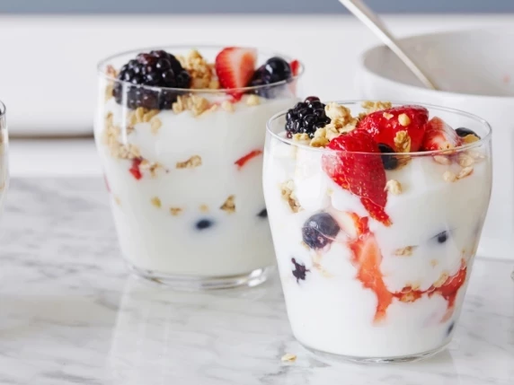

Ingredients
- 3 cups vanilla low-fat yoghurt
- 1 cup fresh or defrosted frozen strawberries in juice
- 1 pint fresh blackberries, raspberries or blueberries
- 1 cup good quality granola
Method of Cooking
- Layer 1/3 cup vanilla yoghurt into the bottom each of 4 tall glasses.
- Combine defrosted strawberries and juice with fresh berries.
- Alternate layers of fruit and granola with yogurt until glasses are filled to the top.
- Serve parfaits immediately to keep granola crunchy.